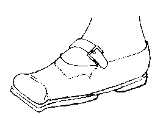
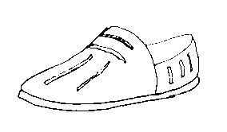
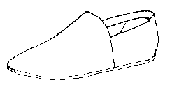
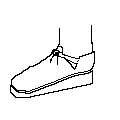
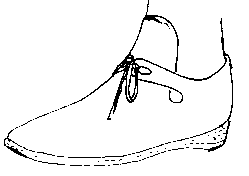

Although these shoes are not "Medieval", I have included them as examples of what other shoes have existed in history. These are especially interesting since they show what happened to shoemaking technology after the Middle Ages.
|
 |
Ypres Shoe (c1530) |
|
 |
Mary Rose Shoe (1549) |
| Mary Rose Boot (1549) | |
 |
Pumps (1565) |
|
 |
Elizabethan Front-Laced Ladies Shoe (Speculative) |
 |
Front Laced Latchet shoe |
Return to Contents
Footwear of the Middle Ages - Shoe Design List/Tudor Era (c1450-1550), by I. Marc
Carlson. Copyright 1996, 2003
This page is given for the free exchange of information, provided the author's name is
included in all future revisions, and no money change hands, other than as expressed in
the Copyright Page.